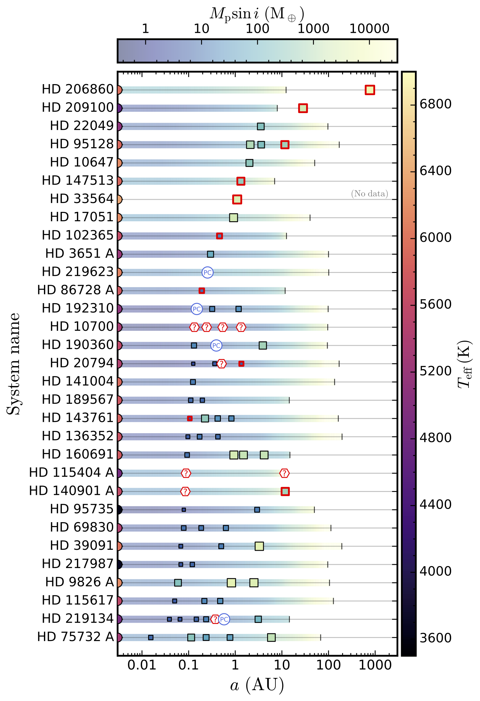
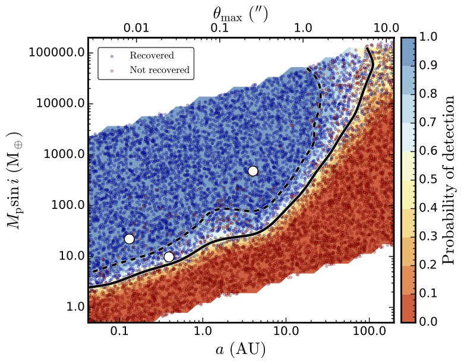
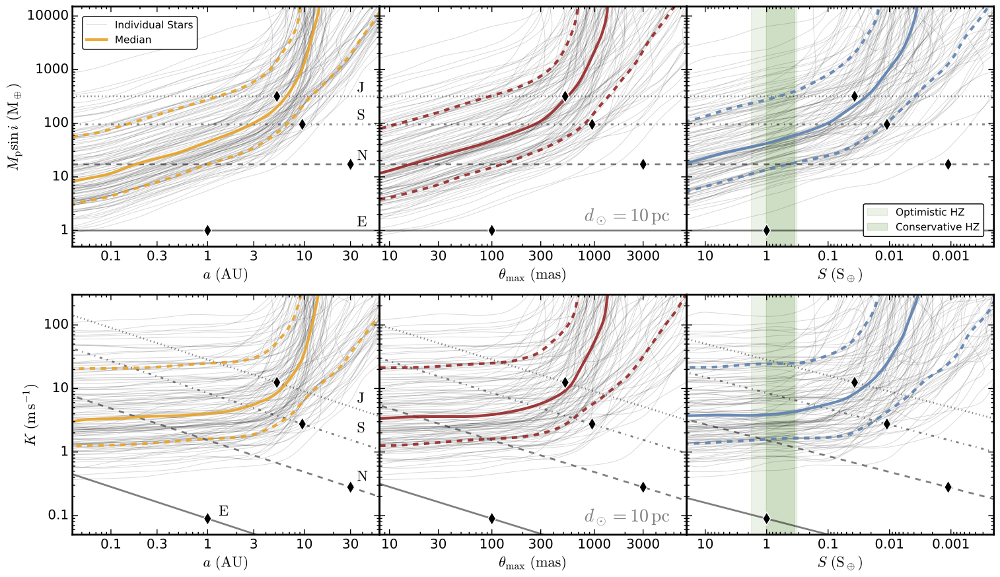

Caleb K. Harada
Research Highlights
The Astrophysical Environments of Habitable Worlds
 NASA/JPL-Caltech
NASA/JPL-Caltech
Despite thousands of exoplanet discoveries over the past few decades enabled by ground- and space-based surveys, our census of the exoplanet population remains incomplete. Targeted radial velocity (RV) searches have been successful at detecting massive planets at short orbital periods around sun-like stars, and even terrestrial-mass planets around M dwarfs. RV surveys have now begun to achieve the long baselines required to detect some massive "cool" giants beyond the snowline, enabling early demographic studies of this long-period population. Synoptic transit surveys like Kepler and TESS have also been extremely successful at measuring the sizes of large, relatively close-in planets, as well as small terrestrial planets around cool stars and some sun-like stars. Additionally, advances in ground-based direct imaging have led to the detection and characterization of giant planets still in their infancy at very wide orbital separations. However, the population of small, terrestrial planets at temperate orbital separations has remained largely unexplored due to observational challenges. Unlocking this key region of parameter space, home to an unknown number of potentially-habitable worlds, is the next chapter in the saga of exoplanet exploration.
Measuring nearby planetary system architectures
Figure 1.What is the range of planetary system architectures and is the configuration of the Solar System common? How do habitable environments arise and evolve within the context of their planetary Systems? These are some of the key science questions at the bleeding edge of exoplanetary research (Astro2020 Decadal). Detections of Earth-size planets at Earth-like separations from Sun-like stars will become more and more common with future advances in extreme precision RV (EPRV), improved transit surveys, and revolutionary facilities like ground-based extremely large telescopes (ELTs) and large, space-based coronagraphic observatories. As they do, a robust understanding of the astrophysical contexts in which these Earth-like worlds reside is necessary to assess their potential to be habitable. Only with this context can we begin to learn about which architectures of planetary systems are typical, how potentially-habitable environments are formed, and what dominant processes influence habitability.
Future ELTs and space-based observatories will directly measure exoplanets at orbital separations previously unprobed by other detection techniques, including planets in the habitable zones (HZs) of Sun-like host stars. The Habitable Worlds Observatory (HWO) is the next-generation flagship NASA mission concept, slated for the 2040s. HWO will be a large, space-based, ultra-stable, UV/optical/NIR observatory that will use wavefront correction and starlight suppression technology to directly image the HZs of neary Sun-like stars. A primary goal of HWO is to discover and spectroscopically characterize dozens of Earth-analog planets and determine whether they exhibit signs of global biospheres. HWO and other direct imaging missions will start by studying the closest stars to the Solar System, where the HZ angular separations are relatively large and the faint starlight reflected by small planets is easier to detect. However, there is only a finite number of nearby stars that will be accessible to DI missions like HWO. Therefore, these are the highest-priority targets for precursor studies of planetary system architectures because future DI will enable the most comprehensive view of small planets at wide orbital separations.
Figure 2.We also care about the system architectures of future DI target stars because they inform which targets should be prioritized for which science goals. For example, if HWO seeks to identify Earth-like planets in the HZ, it is crucial to select targets that we know do not possess massive disruptive planets in the HZ. This is also crucial information for engineering trade studies. If a large fraction of HWO target stars possess giant HZ planets, which are incompatible with smaller Earth-size planets in the same orbit, then these targets will not be suitable for searching for exo-Earths. This would mean that additional, more distant target stars would need to be added to the survey, possibly requiring a telescope with a larger aperture and a coronagraph with a more aggressive inner working angle (IWA). The sooner we can identify such targets, the easier and less costly will be to ajust key engineering decisions regarding HWO's design.
In Harada et al. (2025) we analyzed over 35 years of archival RV data to constrain the system architectures of 120 promising targets for future DI exoplanet missions, including the HWO exo-Earth survey. Using a Bayesian search and orbit fitting framework, we searched for Keplerian signals, fit the orbits of known planets, and measured the search efficiency as a function of minimum planet mass and semi-major axis. We analyzed over 150,000 individual RV measurements that were collected from more than 20 different spectrographs around the world since 1987.
Figure 3.We calculated updated parameters for 53 known companions, and we detected at least 26 additional RV signals corresponding to stellar activity and 4 signals that were planet candidates. We derived RV sensitivity limits as a function of semi-major axis, instellation flux, and maximum angular separation for all 120 stars with at least 20 RV epochs. Figure 1 shows the system architectures of the stars with at least one known planet or planet candidate. Figure 2 shows am RV search completeness map for the star HD 190360, computed from empirical injection and recovery tests. Figure 3 the 50% detection efficiency level for all 120 stars expressed in different parameters. For complete descriptions of these figures, see the captions of Figures 5, 7, and 12 in Harada et al. (2025).
A key results from this analysis is that, based on the empirical search completeness tests, the median mass sensitivity limit in the middle of the conservative HZ is approximately 48 Earth masses. Importantly, this implies that undetected Jupiter-mass planets may be hiding in up to 38% of the HZs of targets in the sample. Undetected Saturn-mass planets could be hiding in up to 53% of the systems' HZs, and Neptune-mass planets in the HZs of up to 82% of systems. Each of these planet types could lead to dynamically unstable conditions for potential Earth-mass planets in the HZ. Therefore, we concluded that additional observations to constrain planet masses are urgently needed. Moderate-precision RV facilities are well-suited for this task.
Evaluating circumstellar environments
[Section under construction!]
Constraining exomoons orbiting temperate giants
[Section under construction!]
Aerosol Feedback in Exoplanet Atmospheres
 NASA/JPL-Caltech/MIT
NASA/JPL-Caltech/MIT
Clouds and hazes (or, more generally, aerosols) are ubiquitous to planets and moons with thick atmospheres in our Solar System. Yet we still don't fully understand the range of possible aerosols compositions, physical properties, spatial extents, and formation pathways. Observations and theory tell us that aerosols must also exist in the atmospheres of exoplanets, but our knowledge is even more restricted by the limitations of remote sensing. However, aerosols may have a significant impact on atmospheric radiative processes, gas abundances, and dynamics, and therefore pose a major challenge for interpreting observations of exoplanetary atmospheres. A deeper understanding of exoplanet cloud physics is necessary to enable more accurate atmospheric modeling and interpretation. This has applications across the spectrum of exoplanet characterization, from testing theories of giant planet formation and migration to making robust detections of biosignatures on Earth-like exoplanets.
Modeling emission spectra of cloudy hot Jupiters at high spectral resolution
[Section under construction!]